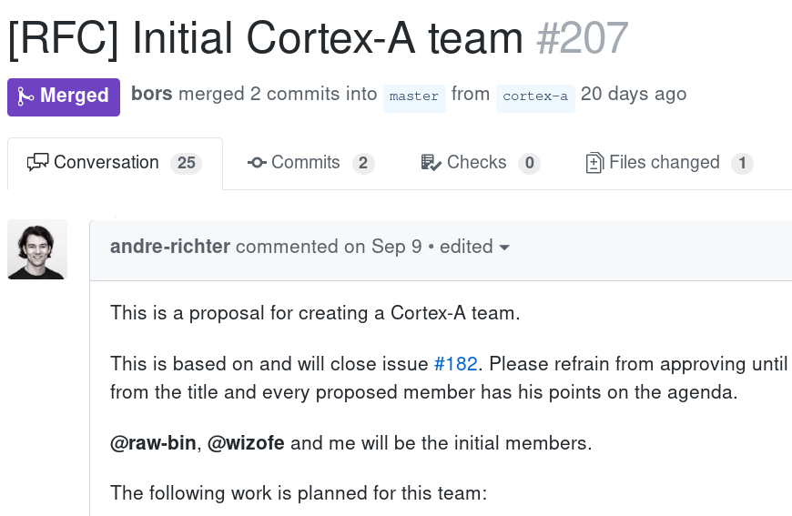

The Embedded Working Group Newsletter - 14
2018-10-28This is the fourteenth newsletter of the Embedded WG where we highlight new progress, celebrate cool projects, thank the community, and advertise projects that need help!
This is a special "spotlight" edition of the newsletter, where we look at a few topics in a bit more detail. Let us know what you think of the new format, and if there is anything you'd like to see included in the next newsletter!
Discuss on users.rust-lang.org, on twitter, or on reddit!
Embedded Rust Applications on Stable!
Rust 1.30 is here! Proc macros, no_std binaries, and a progress bar for cargo! 🎊🎉🦀 https://t.co/IXm5xFYlhU
— Rust Language (@rustlang) October 25, 2018
Now that #[panic_handler] is stabilized in 1.30, you can write Cortex-M bare-metal applications with the stable compiler. All our Rust Embedded crates, such as cortex-m, cortex-m-rt and embedded-hal should be ready to use on stable, but please note our two tutorial books Discovery and The Embedded Rust Book still require 1.30 beta or 1.31 beta as they use 2018 edition syntax (which isn't stabilized until the 1.31 release).
If you are able to trial 1.31 beta, you can help us test:
- Minimal
constfunctions (useful for initializing static variables) - 2018 edition syntax (including changes to
useandextern crate)
The Newest Embedded WG Team: Cortex-A!

The Embedded Working Group has launched a Cortex-A team, to focus on supporting developers working on bare-metal, micro kernel, and other low-level tasks using ARM's Cortex-A series of microprocessors.
The team kicked off with four members: @andre-richter, @parched, @raw-bin, and @wizofe, and have already started assembling initial goals for their team.
The Monotron Visits Rust Belt Rust
Astonishing. Smashed my high score! pic.twitter.com/WG9FXc8Kao
— Jonathan Pallant (@therealjpster) October 20, 2018
@thejpster's project, the monotron, travelled to Ann Arbor Michigan for Rust Belt Rust 2018. Since its last conference appearance, it has gained a whole new list of features, including a serial application loader, a 3 channel wave table synthesizer, Atari Joystick support, and more!
Check out the video above for a demo of Snake on the monotron hardware.
Peripheral Ownership Woes? Not With shared-bus!
extern crate shared_bus;
// Create your bus peripheral as usual:
// let i2c = I2c::i2c1(dp.I2C1, (scl, sda), 90.khz(), clocks, &mut rcc.apb1);
let manager = shared_bus::CortexMBusManager::new(i2c);
// You can now acquire bus handles:
let mut handle = manager.acquire();
// handle implements `i2c::{Read, Write, WriteRead}`, depending on the
// implementations of the underlying peripheral
// Now, this works! :+1:
let port_a = Pcf8574(manager.acquire(), 0x39).unwrap();
let port_b = Pcf8574(manager.acquire(), 0x38).unwrap();
In most embedded-hal compatible drivers, the driver takes either ownership or a mutable reference to the peripheral used to interact with a component, such as I2C or SPI. For some protocols, such as I2C, which might have multiple devices connected to the same peripheral, managing ownership can be difficult (see embedded-hal/35 for discussion).
To address this, @Rahix developed shared-bus, a crate which provides safe shared access to these peripherals through the use of a mutex. This allows for access of the underlying peripheral in as many drivers as you need! Check out the release blog post for more details, and for examples on how to use this for your projects.
The Embedded Rust Community is Growing!
Happy Tuesday! Quick poll: What are you using #embedded @rustlang for right now?
— Rust Embedded Working Group (@rustembedded) October 16, 2018
RTs appreciated!
As we get closer to our goal of stable embedded development with Rust for the 2018 edition launch, the embedded community is ramping up. We did a quick twitter poll which received hundreds of responses, and heard from developers using or evaluating embedded rust for personal and work projects.
The Embedded WG has also grown, starting off this year with 8 developers on a single team, to a group of 27 developers across 11 teams, each with their own area of focus within the embedded rust space.
Now is a great time to start working with Embedded Rust, and we can't wait to see what the next year brings!
embedded-hal Ecosystem Crates
As part of the Weekly Driver Initiative, crates that are part of the embedded-hal ecosystem are now tracked in the Awesome Embedded Rust repository. Here is a current snapshot of what is available there:
| Type | Status | Count | Diff |
|---|---|---|---|
| Device Crates | released | 16 | 0 |
| HAL Impl Crates | released | 13 | 0 |
| Board Support Crates | released | 11 | 0 |
| Driver Crates Released | released | 16 | +1 |
| Driver Crates WIP | WIP | 46 | +6 |
| no-std crates | released | 17 | +3 |